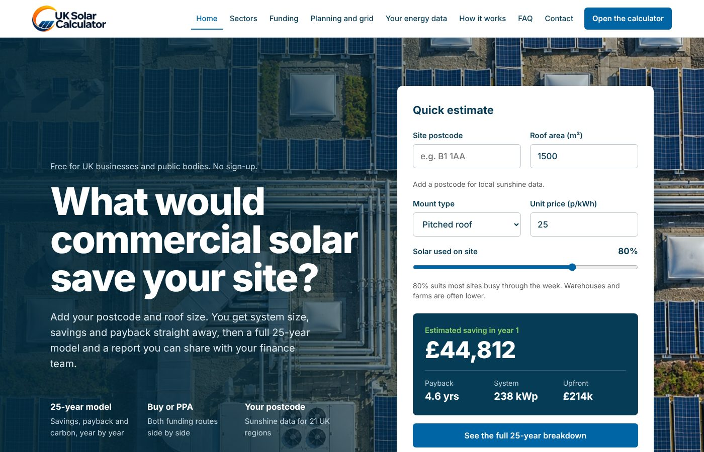
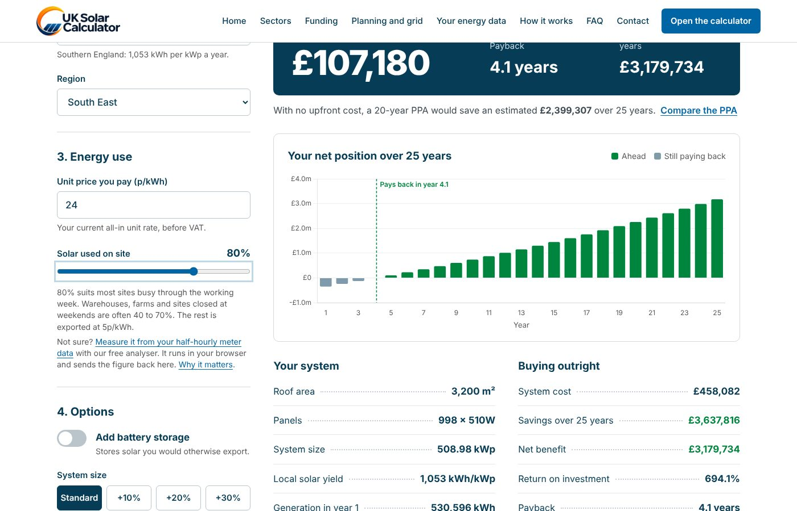
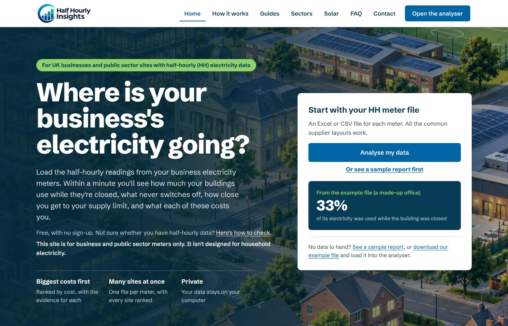
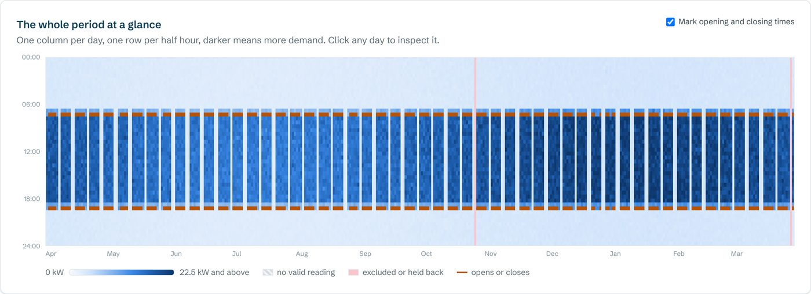

Digital project development
We build online tools that let your customers explore their own energy use, demand and options before they speak to anyone. Useful to them, and a steady source of better enquiries for you.
Buyers do their homework first
Energy buyers research long before they call a supplier. A free tool that answers their real question, on their own site and their own numbers, meets them at that moment. They get something useful. You get an enquiry from someone who already understands the opportunity.
Calculators and sizing tools
Customers enter a few details about their site and see the system size, cost, savings and payback straight away.
Data analysers
Customers load their own meter data and see where their energy goes, what it costs and where the savings are.
Reports they can share
PDF and Excel outputs a facilities manager can take straight to their finance director, carrying your name.
Guides that get found
Plain-English guides and sector pages around the tool, so the right people find it through search.
UK Solar Calculator
The problem: almost every commercial solar conversation starts with the same question: what would it save us? Usually the answer means waiting days for a quote. We wanted businesses and public bodies to get a credible answer in seconds, with the working shown, and a report they could take to their finance team.


What we developed
- A quick estimate on the home page from just a postcode and roof size
- A full calculator where users draw their roofs on a satellite map, let it find the roof outline, or enter dimensions
- Pitched roofs, flat roofs, ground mounts and car park canopies, alone or mixed across one site
- Local generation from the government’s SAP 10.3 sunshine data, picked automatically from the postcode
- A 25-year model of savings, payback, return and carbon, with buying outright and a PPA side by side
- Optional battery storage and a project timeline from enquiry to switch-on, including the grid application
- Guides on funding, planning and grid connection, plus pages for the NHS, councils, data centres and industry
- A published method page setting out every assumption
What it gives users
- An answer in seconds, with no sign-up and no sales call
- Figures for their own site, based on their roof, location and electricity price
- A clear choice of funding, buying outright against a PPA with no upfront cost
- A PDF report to share with their finance team or board
- Honest limits: assumptions are visible and the results are clearly marked as indicative
- A next step when they want a firm design and price
Half Hourly Insights
The problem: most business and public sector sites have half-hourly meter data, 48 readings a day, yet hardly anyone looks at it. The bill shows one number a month. We built a free analyser that turns that data into plain findings, ranked by cost, in about a minute.



A full year at a glance: one column per day, one row per half hour, with opening and closing times marked.
What we developed
- An analyser that reads Excel and CSV files in all the common supplier layouts
- Everything runs in the user’s web browser, so meter data is never uploaded
- One file per meter, with every site ranked by the cost of energy used while it should be closed
- Data checks for missing readings, clock changes and spikes, with each site rated Good, Check or Poor
- Opening hours per site, including closures, bank holidays and overnight shifts
- Findings on use while closed, base load, peaks against supply capacity, unusual days and weekends
- Savings estimates that never count the same saving twice
- Site and portfolio PDF reports, Excel export, a sample report and a downloadable user guide
- Guides on getting data from the main suppliers, plus sector pages and a glossary
What it gives users
- Where the electricity goes, in about a minute, for free
- The biggest costs first, each with the evidence and the full calculation
- Privacy: their data stays on their own computer
- A view across the estate, not just one building
- Headroom on their supply before adding heat pumps or EV charging
- A link to solar: each site shows how much solar it could use, with a button through to the UK Solar Calculator
Quick answers
What kinds of online energy tools do you build?
Calculators and sizing tools, data analysers, shareable PDF and Excel reports, and the plain-English guides around them that help the right people find the tool.
Do users have to sign up or hand over their data?
Not in the two tools we built for ourselves. The UK Solar Calculator needs no sign-up, and Half Hourly Insights runs in the user’s web browser, so meter data never leaves their computer.
How does a free tool bring in enquiries?
It answers the question a buyer has before they are ready to talk to a supplier. By the time they get in touch, they already understand the opportunity on their own site and their own numbers.
From customer question to working tool
We handle the commercial thinking, the content and the build. You get a tool that sells, not a piece of software looking for a purpose.
Start with the question
What does your customer need to know before they will talk to you? That question shapes the whole tool.
Build it properly
Sound calculations with the assumptions on show, a clean design that works on a phone, and outputs people can share.
Connect it to sales
Guides that get found, reports that carry your name and a clear route from the tool to a conversation with your team.
Got an idea for a tool your customers would use?
Tell us the question your customers keep asking. We will tell you whether a tool is the right answer, and what it would take.